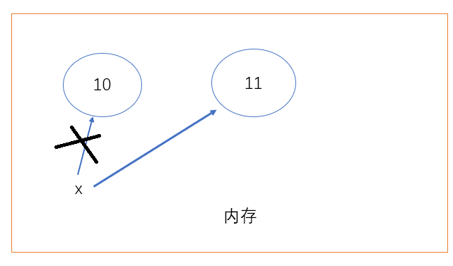
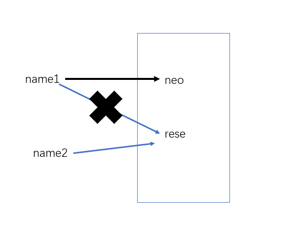

ctrl + c 复制， 默认复制整行
ctrl + v 粘贴
ctrl + x 剪切
ctrl + a 全选
ctrl + z 撤销
ctrl + f 查找
ctrl + shift + z 反撤销
ctrl + d 复制粘贴选中内容，没有选中默认整行
ctrl + y 删除整行
ctrl + backspace 删除一个单词
ctrl + w 选中一个单词
ctrl + shift + r 全局搜索
shift + F10 运行上一个文件
ctrl + shift + F10 运行当前文件
shift + enter 进入下一行
ctrl + / 整体注释
ctrl + alt + l 格式化代码
home 回到行首
end 回到行尾变量： 定义世间万物变化的状态
IPO
I --> input --> 输入（变量）
P --> Process --> 处理
O --> Output --> 输出
['and', 'as', 'assert', 'break', 'class', 'continue', 'def', 'del', 'elif', 'else', 'except', 'exec','finally', 'for', 'from', 'global', 'if', 'import', 'in', 'is', 'lambda', 'not', 'or', 'pass','print', 'raise', 'return', 'try', 'while', 'with', 'yield']下划线（python推荐使用）
neo_of_name = 'neo'驼峰体
NeoOfName = 'neo'常量是指不变化的量（变量名大写）
这个不变是约定俗成的
AGE = 19
AGE = AGE + 1 # 这样做就很沙雕了当我们在test.py文件里定义一个变量x = 10，单纯这样写只是几个字符而已，只有当python解释器运行时，才有变量这个意义。这个变量的概念是python解释器提供的。
变量在计算机内存里开辟一个小空间，小空间内存放变量值10，然后内存给这个小空间一个变量名x，x指向10。
x = 10
x = 11变量在内存开辟一个小空间，小空间内存放变量值10，变量名x指向10。加上一段代码x = 11，内存会重新开辟一个空间存放11，然后x会指向11，之前x指向10的连接会断掉。这样10就成了垃圾，python会自动处理这个垃圾，释放10的内存。

name1 = 'rese'
name2 = name1
name1 = 'neo'
引用计数针对的是变量值， 变量值的引用次数
x = 1000 # 1000的引用次数为1
y = 1000 # 1000的引用次数为2
del x # del删除x，1000的引用次数为1
当一个变量值的引用计数为0时，会触发垃圾回收机制，之前的值会被回收
>>> x = 10
>>> id(10)
140704061711472
>>> y = x
>>> id(y)
140704061711472
>>> z = 10
>>> id(z)
140704061711472 # 内存地址
>>> x = 1000
>>> id(x)
1619602196368 #
>>> x = 1000
>>> id(x)
1619602196496 # 这里内存地址与之前的不同python实现int的时候有个小整数池，这是为了避免因创建相同的值而申请重复的内存空间带来的效率问题。
python解释器会自动定义[-5, 256]之间的 整数池，这是在内存中写死的。这个范围内的整数被全局调用时，永远不会触发垃圾回收机制。
在pycharm中，这个整数范围是扩大的，它优化了。
age = 20
# 打印值
print(age)
# 打印内存地址
print(id(age))
# 打印数据类型
print(type(age))数据类型对变量值做了分类，分成了不同类别
作用：描述年龄/id号
定义方式：
age = 21
age = int(21)使用方法：
x = 2
y = 1
print(x + y) # 加
print(x - y) # 减
print(x * y) # 乘
print(x / y) # 除
print(x % y) # 取余
print(x // y) # 取整
print(x ** y) # 幂运算当你需要使用如sin/cos/tan等函数时，怎么办呢？别担心，有方法
使用cmath模块
import cmath
print(cmath.sin(10))作用：描述薪资
定义方式：
salary = 3.2
salary = float(3) # 3.0使用方法：与int整型类似
>>> x = 1
>>> y = 2
>>> print(x > y)
False
>>> print(x >= y)
False
>>> print(x < y)
True
>>> print(x <= 1)
True
>>> print(x != y)
True
>>> print(x == y)
False作用：描述姓名/性别
定义方式：
name = 'cwz'
name = "cwz's name" 使用方法：
str1 = 'neo'
str2 = 'zen'
print(str1 + ' ' + str2)
# 打印结果：neo zen
print(str2 * 10)
# 打印结果：zenzenzenzenzenzenzenzenzenzen# 打印12
# print(12)用三引号
'''
写什么东西呢
'''相当于定义了一个变量不使用